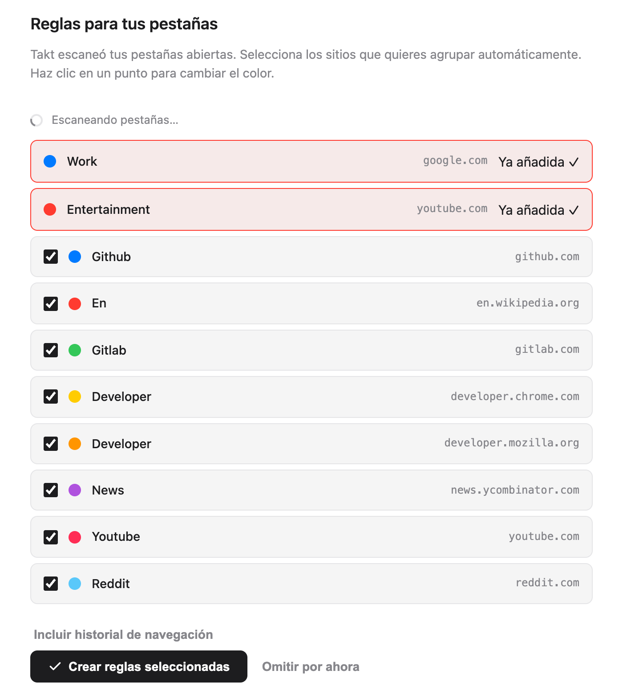
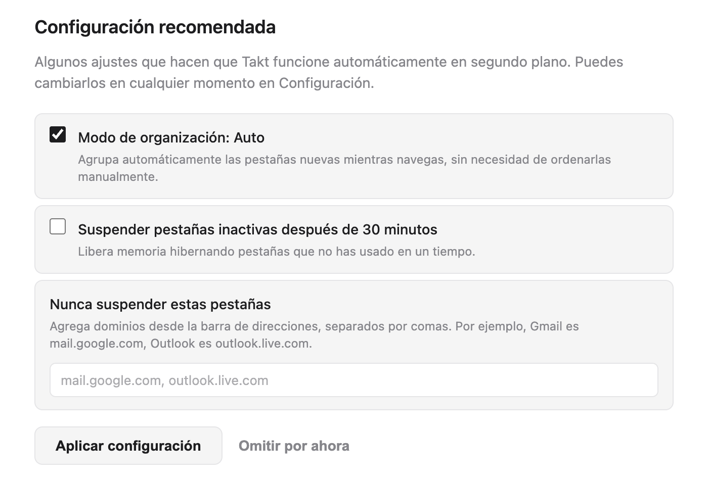
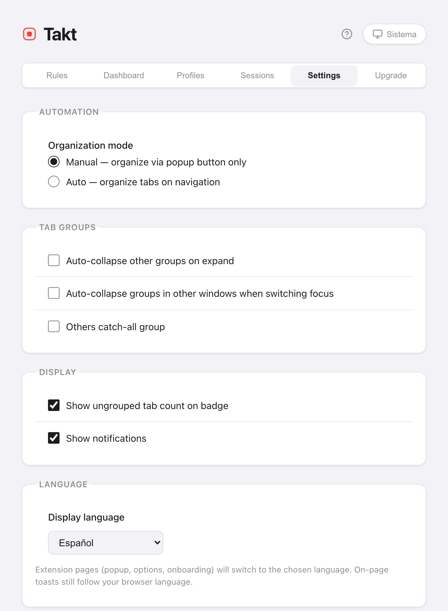

Respuesta corta: la página de bienvenida hace la configuración por ti.
- Muestra los sitios de tus pestañas abiertas. Cada uno que marcas se convierte en una regla.
- Takt agrupa tus pestañas en cuanto existen las reglas.
- El popup tiene los controles del día a día. La página de opciones, las reglas, la configuración y los planes.
- Sin cuenta. El plan Free incluye 5 reglas.
¿Qué pasa al instalar Takt?
Instala Takt desde Chrome Web Store. Ocurren dos cosas:
- Takt añade dos reglas de inicio: Work (google.com, azul) y Entertainment (youtube.com, rojo).
- Se abre una página de bienvenida en una pestaña nueva.
Fija Takt desde el menú de extensiones de Chrome (el icono de la pieza de puzle) para tener el popup a un clic.
¿Cómo elijo mis primeras reglas?
La página de bienvenida analiza tus pestañas abiertas y muestra los 8 sitios que más tienes abiertos. Las dos reglas de inicio aparecen arriba, marcadas como Ya añadida ✓.
- Desmarca los sitios que no quieras agrupar. Todos empiezan marcados.
- Haz clic en un punto de color para ir pasando por los 8 colores de grupo de Chrome.
- Haz clic en Crear reglas seleccionadas.
Takt crea las reglas y agrupa tus pestañas abiertas en el acto. La página muestra el resultado, por ejemplo "12 pestañas agrupadas en 4 grupos."
En el plan Free, las dos reglas de inicio cuentan para el límite de 5 reglas. Así que caben 3 más. Takt se queda con los 3 primeros sitios marcados y te dice cuántos ha dejado fuera. Si te importa cuáles son esos 3, desmarca antes el resto.

¿Dejo que Takt analice mi historial de navegación?
Es opcional. Haz clic en Incluir historial de navegación y Chrome te pide el permiso de historial. Si lo concedes, Takt suma al recuento tus visitas de los últimos 7 días, ponderadas según la frecuencia con que visitaste cada sitio, y rehace la lista.
El recuento se hace en tu navegador. No se envía nada a ningún sitio. Si te lo saltas, las sugerencias salen solo de tus pestañas abiertas.
¿Qué ajustes recomendados conviene mantener?
| Ajuste | En la página de bienvenida | Qué hace |
|---|---|---|
| Modo de organización: Auto | Marcado | Las pestañas nuevas se agrupan al cargarse. Si lo desmarcas (Manual), Takt solo agrupa cuando haces clic en Agrupar pestañas. |
| Suspender pestañas inactivas después de 30 minutos | Desmarcado | Descarga las pestañas inactivas durante 30 minutos para liberar memoria. Siguen en la barra de pestañas. |
| Nunca suspender estas pestañas | Vacío | Dominios que nunca se descargan, como mail.google.com. |
Haz clic en Aplicar configuración o en Listo y Takt guarda las casillas tal como estén. Puedes cambiar los tres ajustes más tarde en Settings.

Pueden aparecer dos secciones más. Si la IA integrada de Chrome no está disponible en el dispositivo, un botón abre los ajustes de IA de Chrome, y la página vuelve a comprobarlo cuando regresas. La página también muestra Quick Switch (Alt+Shift+Space), que es una función Premium.
¿Puedo volver a ver la página de bienvenida?
Sí. Abre la página de opciones, ve a Settings → Support & Feedback y haz clic en Replay welcome tour. La página vuelve a analizar tus pestañas, así que puedes añadir reglas para los sitios que hayas empezado a usar desde entonces.
¿Qué modo de agrupación elijo?
Abre el popup. El panel Inicio tiene un selector Modo de agrupación con cuatro opciones:
| Modo | Elígelo si |
|---|---|
| Por reglas (predeterminado) | Quieres los mismos sitios en el mismo grupo con nombre, siempre. |
| Por categoría | No quieres escribir reglas. 20 categorías fijas, como Development y News. |
| Por IA | Quieres grupos por tema. El modelo integrado de Chrome les pone nombre. |
| Ninguno | Quieres la prevención de duplicados y las demás herramientas, pero sin agrupar. |
Categoría e IA son gratis hasta 5 grupos. Más detalles en agrupar pestañas por categoría o con IA.
¿Cómo escribo mi propia regla?
Haz clic en el icono del engranaje del popup para abrir la página de opciones. En Rules, haz clic en New Rule, añade una condición como URL · Domain · github.com, ponle nombre al grupo, elige un color y guarda. La guía completa: cómo agrupar pestañas automáticamente en Chrome.
¿Dónde está cada cosa en Takt?
El popup es para el día a día. Tiene seis paneles:
| Panel del popup | Qué contiene |
|---|---|
| Inicio | La regla que coincide con la pestaña actual, el modo de agrupación y acciones rápidas como Agrupar pestañas y Contraer todo |
| Reglas | Todas las reglas y un enlace para gestionarlas |
| Sesiones | Espacios de trabajo guardados Premium |
| Hibernar | Las pestañas que has hibernado, listas para despertar |
| Estadísticas | Sugerencias de reglas a partir de los sitios que más usas |
| Tabs | Todas las pestañas abiertas por grupo, con un cuadro de búsqueda |

La página de opciones es para la configuración. Sus pestañas son Rules, Dashboard (memoria por pestaña y por grupo, Premium), Profiles (Premium), Sessions (Premium), Settings y Upgrade.
¿Cómo cambio el idioma o el tema de Takt?
Idioma. Ve a Settings → Language → Display language. Elige English, Français, Español, Italiano, Deutsch o Português, o Use browser default. Tu elección no depende del idioma de Chrome. El popup, la página de opciones y la de bienvenida cambian de idioma; la página se recarga para aplicarlo. Los pequeños avisos que Takt muestra dentro de las páginas web siguen el idioma de Chrome.
Tema. Haz clic en el botón de tema de la cabecera del popup o de la página de opciones. Va alternando entre Sistema, Claro y Oscuro. Sistema sigue a tu sistema operativo. Las dos elecciones se guardan con el resto de tu configuración.

Lo que la configuración inicial no hace
- Las sugerencias van sitio por sitio. La página de bienvenida crea una regla de dominio por sitio. Para patrones como "todas las pull requests", escribe tú mismo reglas glob o regex (Premium).
- En el modo Reglas, los sitios desconocidos se quedan sin agrupar. Añade una regla o cambia a Categoría o IA.
- El plan Free se queda en 5 reglas. Consulta qué incluyen Free y Premium.
Dos minutos desde la instalación hasta tener las pestañas agrupadas.
Añadir Takt a Chrome, gratisPreguntas frecuentes
¿Takt es gratis?
Sí. El plan Free incluye 5 reglas, agrupación por Categoría e IA hasta 5 grupos, prevención de duplicados, suspensión automática y las acciones rápidas del popup. Premium cuesta 3 $/mes o 30 $/año.
¿Necesito una cuenta para usar Takt?
No. Takt no tiene cuentas. Tus reglas y tu configuración se guardan en Chrome. Consulta qué hace Takt con tus datos.
¿Cómo vuelvo a abrir la página de bienvenida?
Página de opciones → Settings → Support & Feedback → Replay welcome tour.
¿Puede Takt usar un idioma distinto al de Chrome?
Sí. En Settings → Language, elige uno de los 6 idiomas. El popup, la página de opciones y la de bienvenida cambian de idioma; los avisos dentro de las páginas web siguen el idioma de Chrome.